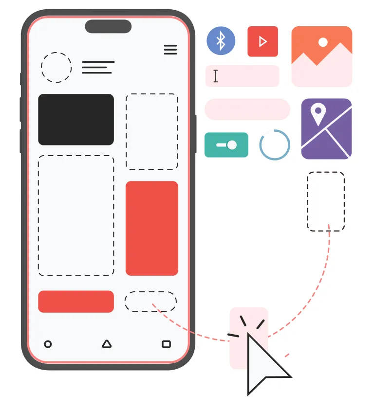

Myller Joseph Banegas Gomez
Desarrollador
Me gradue en Ciencias de la Computación en la Universidad Católica de Honduras, donde me especialicé en el desarrollo de software y bases de datos. Durante mi período académico, obtuve una sólida formación en estas áreas fundamentales, proporcionándome una base sólida para mi trayectoria profesional en el ámbito tecnológico.
Mis Proyectos
Proyecto 1

Contribuí al desarrollo de una aplicación para la Universidad Católica, la cual se diseñó para gestionar un consultorio jurídico.
Proyecto 2

Desarrollé un sitio web para un hotel, trabajando en equipo para crear una plataforma que incluye funcionalidades específicas para la industria hotelera. Esta página web ofrece una experiencia de navegación intuitiva y eficiente, con características como reservas en línea, galería de imágenes y descripciones detalladas de servicios y habitaciones
Proyecto 3
Desarrollé una aplicación móvil de bloc de notas que ofrece a los usuarios una forma intuitiva y eficiente de tomar notas, organizarlas y acceder a ellas en cualquier momento. La aplicación incluye funciones como la capacidad de crear, editar y eliminar notas, así como la organización por categorías o etiquetas.